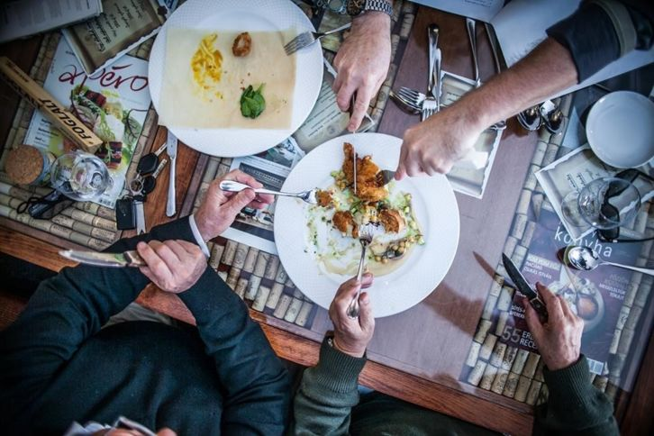
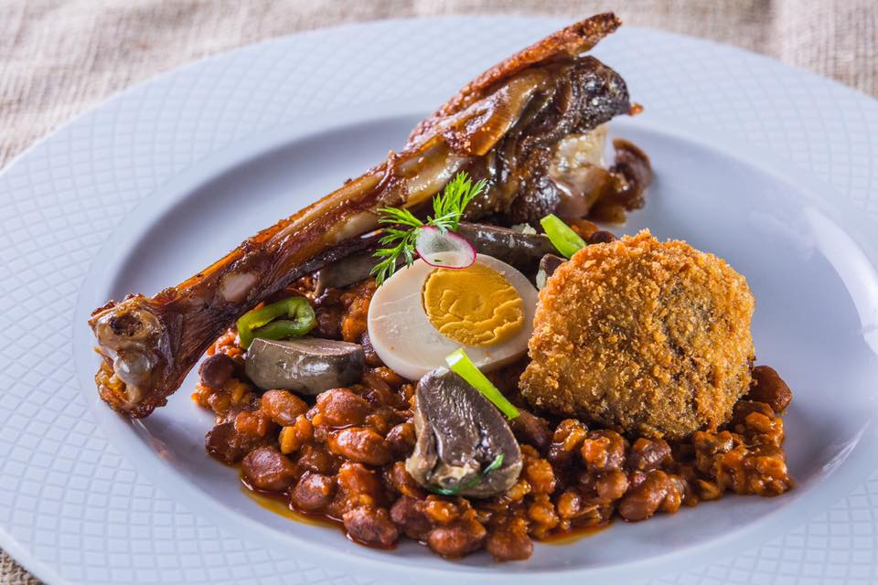
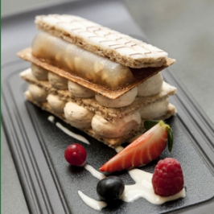

Nem igazán szeretjük a budaiakat errefelé. De tegyük fel, hogy 4-es és a 3-as metró is kifüstöl, az e-taxisok hatósági áremelésért tüntetnek fővárosunk hídjain, és mindeközben, mivel sétálni utálunk, Budán ragadunk. Kibaszás a kibaszásban, hogy még éhesek is vagyunk és ramadán miatt zárva az összes gyrosos.
Vagy minden rendben (NEM MENTÁLISAN!) és csak ennénk egy jót. Például a Kisbíróban.
Elég hangzatos ajánlatok a táblán, Grimm-meséket idéző pincéri körítés. Gyorsan rendeltünk is, többek között tisztított vízet, ami 700 HUF/liter. Biztos vagyok benne, hogy évezredek alatt gyűjtött és szárított vizigót heréken átpaszírozott vízet kaptunk, szóval minden cseppje aranyat ért. Végül kompenzálva a víz társadalmi hováját az egyszerűség jegyében sólet mellett döntöttem.
A halovány esti világítás és nagy várakozások közepette buktam rá a sóletre, amit a tudjuk kik szoktak enni. Fűszerezés pipa, adag pipa, tojás pipa, izgalom az sehol. De, aki izgalomra vágyik manapság, az nem étterembe megy, hanem meglátogatja Kasza Tibor facebook oldalát.
Édes szektor
Desszertnek meg jöhetett az Eszterházy tortácska. Na abban már jóval több izgalom volt, állt a krém mint a kutyafasza. Újszerű kinézet, masszív szerkeztés, alig lehetett benne több mint 20g cukor. Az elégedetlenkedőknek viszont idézném nemzetünk nagynagyát, Mr. Márait.
Biztosan tudom, még tartogat az élet számomra valamit, ami egyszerre lesz orvosság és édesség, mámor és szőlőcukor. Megállok, körülnézek, várakozom.
Megálltam, körülnéztem, továbbmegyek.
A hely kellemes, de már ez a szó is aggasztó egy étterem kapcsán. Ahhoz viszont, hogy a hétvégi ebédet ne nagyanyám rendszeresen elkövetett tejszínes gombás szeletei fölé hajolva töltsem, sokkal több pénzre lenne szükségem. Ugyanis egy sólet 4k-ért drága. Egy család akkor is lazán elkölt 10-15 ezer forintot egy ebédre, ha nem fröcsköli szanaszét a vizigótok akváját.